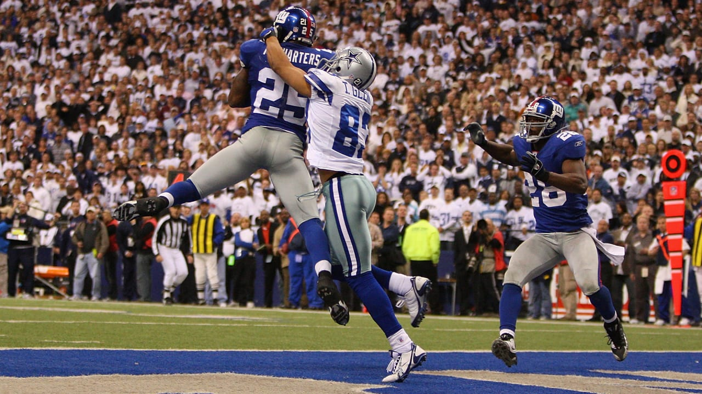

Methodical Over Flash: How the Giants Ground Down Dallas in Week 1
| Team | Q1 | Q2 | Q3 | Q4 | Total |
|---|---|---|---|---|---|
| Dallas Cowboys | 0 | 7 | 7 | 6 | 20 |
| New York Giants | 7 | 7 | 7 | 7 | 28 |
I. The 66-Year Shadow: A Blood Feud Re-Ignited
Few matchups in North American professional sports carry the psychological and geographic tension of the New York Football Giants and the Dallas Cowboys. Spanning 128 meetings since 1960, this rivalry was forged in muddy 1960s clashes at Yankee Stadium, codified through the brutal collisions of the 1980s Parcells-Landry warfare, and punctuated by unforgettable postseason heartbreaks.
Yet in recent years, this classic rivalry had curdled into a one-sided nightmare for Big Blue. Dallas entered MetLife Stadium holding a lopsided command over the series, having won 16 of the previous 18 encounters and asserting a nine-game chokehold that stripped New York of its NFC East swagger. Every season opener between these two franchises felt pre-written: high-flying Dallas perimeter speed carving up conservative New York schemes while Jerry Jones celebrated on the luxury suite monitors.
To change that trajectory in 2026, the Giants didn't just need a victory; they needed a systematic identity exorcism. They needed to confront the ghosts of their past failures by proving they could take Dallas’s best punch and respond with ruthless, physical football.
📸 Through the Years: Giants vs. Cowboys Archival Gallery
Source: Giants.com / AP Photos
Y.A. Tittle (14) directs a line shift against Dallas in a 42-14 rout.

Rookie LT hoists Tony Dorsett's OT fumble, clinching a 17-year playoff drought break.

Mark Bavaro (89), whose bruising play across the middle personified 80s dominance.

R.W. McQuarters outleaps Terry Glenn with 9s left to upset #1-seed Dallas 21-17.
Editorial Poll: Who was Big Blue’s Week 1 MVP?
Cast your vote based on tactical leverage and game impact